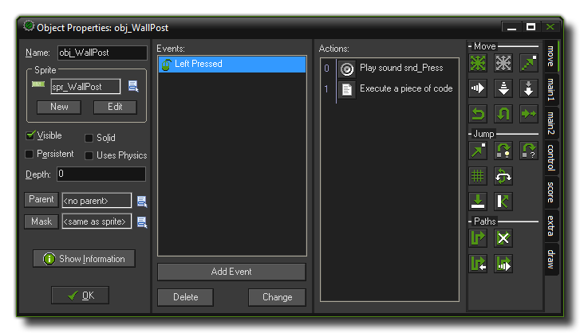

GameMaker:Studio Overview
This section explains some of the some of the core concepts of how GameMaker:Studio works so you can start making games as quick as possible.
The Global idea
Before delving into the possibilities of GameMaker:Studio it is good to get a feeling for the idea behind the program. Games created with GameMaker:Studio take place in one or more
rooms. Now, these Rooms are flat 2 dimensional spaces but they can contain 3D-looking graphics as well depending on how you use them. In these rooms you place objects,
which you can define within the program. Typical objects can be walls, moving balls, the main player controlled character, enemies, and anything else you can think of from games that you have played!
Some objects, like walls, just sit there and don�t do anything, while other objects, like the main player controlled character, will move around and react to the input received from the player using keyboard,
mouse, or joystick. For example, when the main character meets an enemy he might die or he might fight the enemy and score points. As you can see, objects are the most important ingredients of games
made with GameMaker:Studio, so let us talk a bit more about them.
An Overview of Objects and Rooms
First of all, most objects, when placed as instances within a room, need some image to make them visible on the screen. Such images are called sprites. A sprite is often not a single image but a
set of images that are shown one after the other to create an animation and in this way it can look like a character is walking, or a ball is rotating, or an enemy is exploding, etc... During the game, the sprite
of a particular instance of any object can be changed, so a character can look different when it walks to the left or to the right, for example. You can create your own sprites in GameMaker:Studio or
load them from files and use them "as is" or edit them yourself with the powerful GameMaker:Studio sprite editor. Here is an example of how a typical object looks:

For an object to actually do something, we need to give it actions, but we also need to tell it when to complete these actions. To do that we use EVENTS. An EVENT is a special moment
in which we can place certain actions and be sure that those actions will only happen when that EVENT is triggered. There are a large number of different events that can take place and a large
number of different actions that you can let your objects take too. For example, there is a Create Event that is performed only when the object gets created. Actually, that's not quite true! Objects are
never created, rather they are used to create instances... An instance is a copy of the base object, complete with all the same events and actions, and it's these that are used in your games.
think of an object as the blueprint, and the instance as a manifestation of that blueprint. For example, to add motion to a ball object when we create an instance of it in a room, we would add a motion action
to the create event of the object.
Another example of an event is the Collision Event. This is triggered when two instances of any objects collide in the game room. In such a case you can make the instance stop or reverse direction or any
number of other actions, like play a sound effect or add points to a score. Further events include the Keyboard Event (for when the player presses a key), Mouse Event to detect mouse buttons,
and the Draw Event which is where we can tell each instance of an object to draw whatever we want. There are still more events for each object and these are covered further along in the manual.
Once you have defined your objects it is time to define the rooms in which they will be placed. Rooms can be used for levels in your game or to show information or even to hold a start menu. There are actions
to go from room to room so that you can create button objects that, when pressed, will move the player from one room of the game to another. It should also be noted that if you do not have any rooms in your game
then GameMaker:Studio will not run. But how do you create a room? GameMaker:Studio has a complete editor for creating these areas and in the editor you can add and change many aspects of how
the room will look and play. For example, you can add backgrounds in that can be either a simple color or an actual image. Such background images can be created in GameMaker:Studio with its
own editor, or you can load them into the resources from files. Backgrounds can actually be made to do a lot of things but for the time being, just consider it as something that makes the rooms look nice. Next, you can place one
(or multiple!) instances of any objects you have created into the room. For example, you want to have a large walled area in your game, so you would define one wall object and then place multiple instances of that
object in your room to create large, complex walled areas. The same can be done for enemy objects too! Just make one enemy object, and then place multiple instances within your room to get a whole level created
from only a few base objects. Here is an example of how the room editor typically looks:

Once you have completed the design of your rooms, you are ready to run the game. The first room to be shown is always the first room in the main list of rooms and it will be run at the start. Now the instances you
have placed will come to life because of the actions defined in their object create events and they will start reacting to each other due to actions placed in the object collision events. They will also react to the player
using the actions placed in any keyboard or mouse events.
That covers the two most important things in GameMaker:Studio, but there are a few more! All together they are called resources and assets, and in the main screen of
GameMaker:Studio you can find them on the left-hand side in a space called the resource tree. Here is a list of them and you should know that they will all play a crucial role in creating
your game:
- Sprites: images (often animated) that are used to represent the objects
- Sounds: can be used in games as either background music or as sound effects
- Backgrounds: still images used as background for the rooms
- Paths: these can be used to make instances move along a pre-defined path
- Scripts: a script is a piece of code to which you give a name and use like a GML function
- Shaders: a shader is a combination of two "programs" written in a shader language to create graphical effects.
- Fonts: to draw text in the game you can add fonts of many different styles
- Time lines: can be used to control the precise moment in a game that things should happen
- Objects: which are the building blocks on which your game is built
- Rooms: the space (levels) in which the objects are placed
- Included Files: files that your game will export to the chosen target for use
- Extensions: the extensions included with your game to expand functionality
- Constants: a per-configuration list of the constants that you define for your game
Please note that the above resources and assets have certain limitations if you are using the Free version of GameMaker:Studio. For a complete list of these limitations please see
here.
Note : To help you get familiar with GameMaker:Studio, it is strongly recommended that you follow the tutorial that is shown when you first start the program. If you removed the
tutorial from view, you can always make it visible again by choosing Tutorial in the Help menu.